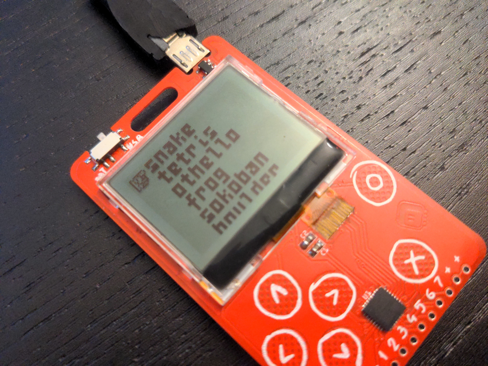

PewPew Around the World¶
Published on 2022-10-13 in PewPew LCD.
PewPew is not just the device. It’s being used around the world. People make PewPew-compatible devices, such as Christian Walther’s PicoPew , they write new games for it, and even publish them online, such as Łukasz and Stanley Langa’s DDRez , and most importantly, they run workshops with them, such as the most recent Cheuk Ting Ho’s workshop at PyCon Ghana.
I hope that now with this even cheaper and improved device it will become even more useful for all kinds of educators, from self-taught amateurs, through volunteers, to professional teachers. Of course the most important thing for this to happen is documentation, so that’s what most focus will now be on going forward. The hardware seems good enough for now, and the software can use some small improvements still, but is basically usable, but you can never have enough documentation.
